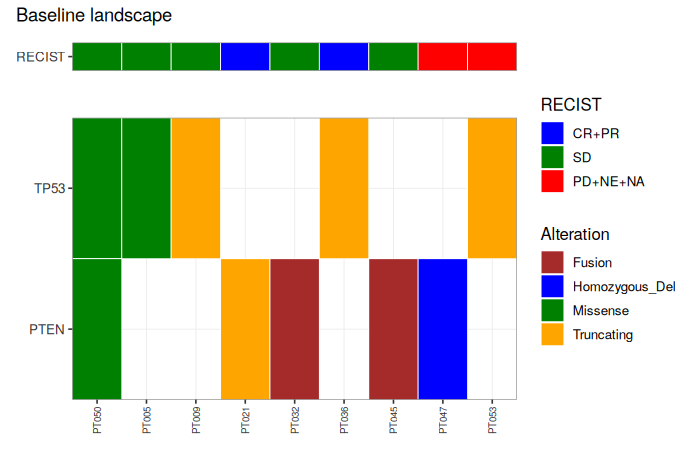
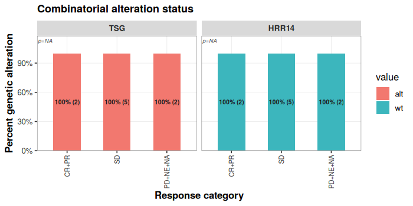

2026-08-05
One-page pass through ctdnaTM: prepare → QC → filter →
plots → pipeline. For a deeper tour of every function see
vignette("ctdnaTM_function_tour"). For the filter system’s
internals see vignette("ctdnaTM_filter_internals").
ctdnaTM builds every deliverable off a single
prep object — a named list holding
$clinical, $samples, $variants,
and optionally $assessments, $adrs, and
platform-specific frames. ctdna_prepare() assembles it from
a Guardant Health Infinity report plus any ADaM frames.
library(ctdnaTM)
# Real usage: replace with your infinity_report + ADaM frames.
sim <- ctdna_make_mock_study(n_patients = 60, seed = 1)
prep <- ctdna_prepare(
infinity_report = sim$infinity_report,
adam = list(adsl = sim$clinical),
verbose = FALSE)
class(prep)
#> [1] "ctdna_prep"
setdiff(names(prep), "dictionary")
#> [1] "samples" "variants" "clinical" "assessments"In v0.71+, ctdna_prepare() no longer applies sample QC
by default — prep$variants comes back raw. This is
deliberate: two users looking at the same prep will see the same
rows.
prep <- ctdna_sample_qc(prep, verbose = FALSE)
nrow(prep$variants) # after QC
#> [1] 515
prep <- ctdna_sample_qc(prep, verbose = FALSE)
nrow(prep$variants) # unchanged on rerun
#> [1] 515Single entry point with two mandatory flags:
apply |
explain |
effect |
|---|---|---|
TRUE |
TRUE |
prep$variants filtered;
annotated snapshot at
prep$filter_explanation$<sig> |
TRUE |
FALSE |
prep$variants filtered; no
snapshot |
FALSE |
TRUE |
prep$variants unchanged;
snapshot only |
FALSE |
FALSE |
error |
Live prep$variants never carries the
filtering_criteria column — it lives only on the
snapshot.
prep <- ctdna_variant_filter(prep,
filter_scheme = c("TSG_Tier1","TSG_Tier2","HRR14"),
apply = TRUE,
explain = TRUE,
verbose = FALSE)
# Row counts in the annotated snapshot
sig <- names(prep$filter_explanation)[1]
sig
#> [1] "TSG_Tier1_TSG_Tier2_HRR14"
head(sort(table(prep$filter_explanation[[sig]]$filtering_criteria,
useNA = "ifany"), decreasing = TRUE), 6)
#>
#> <NA>
#> 470
#> FAIL::TSG_Tier1, TSG_Tier2
#> 14
#> PASS::TSG_Tier1(somatic_nonsyn)
#> 9
#> PASS::TSG_Tier1(somatic_nonsyn), TSG_Tier2(somatic_LoF)
#> 9
#> PASS::TSG_Tier1(fusion)
#> 6
#> PASS::TSG_Tier1(somatic_nonsyn), TSG_Tier2(somatic_PLP_missense)
#> 3Branch labels are baked into every built-in scheme, so the annotation tells you why a row passed (or failed), not just which scheme:
PASS::TSG_Tier1(somatic_nonsyn), TSG_Tier2(somatic_LoF)
— passed both schemes, with the branch(es) that fired.FAIL::TSG_Tier1, TSG_Tier2 — in both scopes, both
failed.NA — row in no scheme’s scope.# All four biomarker schemes drop ClinVar benign and CHIP unconditionally.
visualized_scheme(TSG_Tier2(), width = 76)
#> TSG_Tier2 (category: gene_set)
#> TSG Tier 2 (intermediate) on TP53/RB1/PTEN. Drops ClinVar benign and CHIP.
#> Passes: germline P/LP, OR somatic LoF, OR somatic ClinVar-P/LP +
#> (missense|inframe|rare-P/LP-synonymous), OR somatic LOH/homozygous
#> deletion, OR somatic deleterious intra-chromosomal LGR (deletion,
#> tandem-duplication, inversion; all Chromosome == Fusion_chrom_b).
#>
#> REQUIRE (gates -- if any fail -> DROP):
#> |- Gene in {TP53, RB1, PTEN}
#> |- NOT (ClinVar in {Benign, Likely_benign, Benign/Likely_benign})
#> `- NOT (Somatic_status = somatic_putative_ch)
#>
#> KEEP if ANY of these paths succeeds:
#>
#> PATH A -- Somatic_status + ClinVar
#> |- Somatic_status = germline
#> `- ClinVar in {Pathogenic, Likely_pathogenic, Pathogenic/Likely_pathogenic, Pathogenic/Likely_pathogenic,_other, Likely_pathogenic,_other, Likely_pathogenic,_risk_factor}
#>
#> PATH B -- Somatic_status + Molecular_consequence
#> |- Somatic_status = somatic
#> `- Molecular_consequence in {frameshift, nonsense, start_lost, stop_lost, splice_acceptor, splice_donor}
#>
#> PATH C -- Somatic_status + ClinVar + Molecular_consequence
#> |- Somatic_status = somatic
#> |- ClinVar in {Pathogenic, Likely_pathogenic, Pathogenic/Likely_pathogenic, Pathogenic/Likely_pathogenic,_other, Likely_pathogenic,_other, Likely_pathogenic,_risk_factor}
#> `- (Molecular_consequence in {missense, inframe_indel, inframe_insertion, inframe_deletion, inframe_duplication} OR Molecular_consequence = synonymous AND ClinVar in {Pathogenic, Likely_pathogenic, Pathogenic/Likely_pathogenic, Pathogenic/Likely_pathogenic,_other, Likely_pathogenic,_other, Likely_pathogenic,_risk_factor} AND gnomAD_AF < 0.01)
#>
#> PATH D -- Somatic_status + Variant_type + CNV_type
#> |- Somatic_status = somatic
#> |- Variant_type = CNV
#> `- CNV_type in {homozygous_deletion, loh_deletion}
#>
#> PATH E -- Somatic_status + Variant_type + Functional_impact + Variant_type + Direction_a + Direction_b + Chromosome
#> |- Somatic_status = somatic
#> |- Variant_type = LGR
#> |- Functional_impact = deleterious
#> |- (Variant_type = LGR AND Direction_a = -1 AND Direction_b = 1 OR Variant_type = LGR AND Direction_a = 1 AND Direction_b = -1 OR Variant_type = LGR AND (Direction_a = 1 AND Direction_b = 1 OR Direction_a = -1 AND Direction_b = -1))
#> `- Chromosome ==col Fusion_chrom_b
#>
#> Otherwise -> DROP.TSG_Tier1() — most permissive on TP53 / RB1 /
PTEN.TSG_Tier2() — intermediate on TP53 / RB1 / PTEN (old
TSG body + new intra-chromosomal LGR).TSG_Tier3() — most restrictive on TP53 / RB1 / PTEN. No
LGR, no fusion, no rare-syn carve-in.HRR14() — HRR biomarker on 14 HRR genes (old HRR body +
new intra-genic LGR).scheme_basic() — GH Infinity “impactful alterations”
ruleset, applied to all genes.Two entry points:
# Flat AND/OR case (positive criteria only, no negation)
my_short <- ctdna_create_scheme(
name = "my_short_tsg",
genes = c("TP53","RB1","PTEN"),
criteria = c("somatic","truncating"),
combine = "all",
overwrite = TRUE)
# Full grammar (with negation, nesting, named branches)
my_full <- create_filtering_scheme(
rule(Gene = c("TP53","RB1","PTEN")),
not(rule_clinvar_benign()),
not(rule_ch()),
branches = list(
germline_PLP = allOf(rule_germline(), rule_clinvar_path()),
somatic_LoF = allOf(rule_somatic(), rule_truncating()),
somatic_rare_missense = allOf(rule_somatic(),
rule(Molecular_consequence = "missense"),
rule_rare_001())),
name = "my_full_tsg", overwrite = TRUE)Both are usable with
ctdna_variant_filter(prep, "my_short_tsg", ...).
prep$adrs <- data.frame(
Patient_ID = prep$clinical$Patient_ID,
indication = rep(c("NSCLC","HNSCC","SCLC","mCRPC"),
length.out = nrow(prep$clinical)))
op <- ctdna_oncoprint(prep,
gene_sets = list(TSG = c("TP53","RB1","PTEN"),
HRR14 = ctdna_gene_set("HRR14")),
filter_scheme = "TSG_Tier1",
engine = "ggplot",
title = "Baseline landscape")
op$plot
gr <- ctdna_alteration_grid(prep,
gene_sets = list(TSG = c("TP53","RB1","PTEN"),
HRR14 = ctdna_gene_set("HRR14")),
scheme = "three")
gr$plot
ctdna_pipeline() runs every deliverable step whose input
modalities are present. Access via
res$<key>$plot.
res <- ctdna_pipeline(prep,
which = c("oncoprint","alteration_grid"),
scheme = "three",
gene_sets = list(TSG = c("TP53","RB1","PTEN"),
HRR14 = ctdna_gene_set("HRR14")),
engine = "ggplot",
verbose = FALSE)
names(res)
#> [1] "plots" "failures" "skipped" "timing"
#> [5] "oncoprint" "alteration_grid"vignette("ctdnaTM_function_tour") — every user-facing
function with a runnable example.vignette("ctdnaTM_filter_internals") — how the filter
engine works; how to extend the grammar.?ctdna_rules_library — the full rule-predicate
catalog.NEWS.md — changelog.sessionInfo()
#> R version 4.3.3 (2024-02-29)
#> Platform: x86_64-pc-linux-gnu (64-bit)
#> Running under: Ubuntu 24.04.4 LTS
#>
#> Matrix products: default
#> BLAS: /usr/lib/x86_64-linux-gnu/blas/libblas.so.3.12.0
#> LAPACK: /usr/lib/x86_64-linux-gnu/lapack/liblapack.so.3.12.0
#>
#> locale:
#> [1] C
#>
#> time zone: Etc/UTC
#> tzcode source: system (glibc)
#>
#> attached base packages:
#> [1] stats graphics grDevices utils datasets methods base
#>
#> other attached packages:
#> [1] knitr_1.45 ctdnaTM_0.77.0
#>
#> loaded via a namespace (and not attached):
#> [1] vctrs_0.6.5 patchwork_1.2.0 cli_3.6.2 rlang_1.1.3
#> [5] xfun_0.41 highr_0.10 generics_0.1.3 labeling_0.4.3
#> [9] glue_1.7.0 colorspace_2.1-0 scales_1.3.0 fansi_1.0.5
#> [13] grid_4.3.3 munsell_0.5.0 evaluate_0.23 tibble_3.2.1
#> [17] lifecycle_1.0.4 compiler_4.3.3 dplyr_1.1.4 pkgconfig_2.0.3
#> [21] farver_2.1.1 R6_2.5.1 tidyselect_1.2.0 utf8_1.2.4
#> [25] pillar_1.9.0 magrittr_2.0.3 tools_4.3.3 withr_2.5.0
#> [29] gtable_0.3.4 ggnewscale_0.4.10 ggplot2_3.4.4